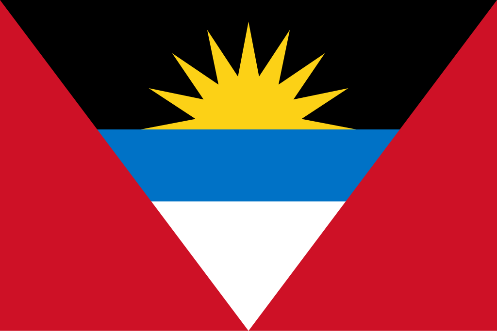

Antigua e Barbuda
 Antigua e Barbuda é um país insular localizado no Caribe Oriental, composto principalmente pelas ilhas de Antigua, Barbuda e Redonda, com uma área total de aproximadamente 442 km². A capital é St. John’s, situada na ilha de Antigua. O país é conhecido por suas praias paradisíacas, águas cristalinas e recifes de corais que atraem turistas de todo o mundo. Com uma população estimada em cerca de 100 mil habitantes, Antigua e Barbuda possui uma economia baseada no turismo, agricultura e serviços financeiros. A língua oficial é o inglês, refletindo o legado colonial britânico, e a cultura local é uma rica mistura de tradições africanas, britânicas e caribenhas, manifestadas na música, dança, culinária e festividades populares.
História
A história de Antigua e Barbuda é marcada pela presença inicial de povos indígenas, principalmente os arauaques e caribes, que habitaram as ilhas antes da chegada dos europeus. Cristóvão Colombo chegou a Antigua em 1493 durante sua segunda viagem ao Novo Mundo, mas a colonização efetiva só ocorreu no século XVII, com a chegada de colonos ingleses. Esses colonos introduziram plantações de açúcar, utilizando mão de obra escravizada africana, transformando a economia e a sociedade local de forma profunda.
Durante o período colonial, Antigua tornou-se um dos principais centros de produção de açúcar no Caribe britânico, enquanto Barbuda servia como fornecedor de alimentos e recursos para os plantadores. Após a abolição da escravatura em 1834, a sociedade começou a se reorganizar, mas as estruturas econômicas continuaram centradas na agricultura de exportação. Em 1981, Antigua e Barbuda conquistou a independência plena do Reino Unido, mantendo uma monarquia constitucional com o monarca britânico como chefe de Estado. Desde então, o país tem buscado diversificar sua economia, investir no turismo e preservar seu patrimônio histórico e cultural, consolidando sua identidade como nação caribenha independente e vibrante.
Cultura
A cultura de Antigua e Barbuda é um reflexo da fusão de influências africanas, britânicas e caribenhas. A música é uma parte essencial da vida local, com destaque para gêneros como calypso, soca, reggae e steelpan, frequentemente apresentados durante festivais e celebrações públicas. A dança tradicional também é importante, com coreografias que celebram tanto a herança africana quanto as influências europeias. O Carnaval de Antigua, conhecido como Antigua Carnival, é um evento anual que combina música, dança, desfiles de rua e competições culturais, reunindo moradores e turistas em uma grande festa de cores e ritmos.
A gastronomia da ilha é caracterizada pelo uso de frutos do mar frescos, legumes tropicais, especiarias e pratos tradicionais como pepperpot, ducana e fungee. O inglês é a língua oficial, mas expressões locais e sotaques refletem a herança africana e o contexto caribenho. Nas artes visuais e na literatura, artistas locais exploram temas como identidade cultural, história da escravidão e celebrações comunitárias. Arquitetonicamente, as cidades exibem uma combinação de construções coloniais britânicas coloridas e edifícios modernos, especialmente na capital St. John’s, criando uma paisagem urbana charmosa e historicamente rica.


Clima
Antigua e Barbuda apresenta clima tropical marítimo, com temperaturas médias variando entre 24°C e 30°C ao longo do ano. A estação seca ocorre entre dezembro e maio, enquanto a estação chuvosa vai de junho a novembro, período em que a ilha pode ser afetada por furacões ocasionais. A constante brisa do mar ajuda a amenizar o calor e torna o clima agradável, favorecendo o turismo e as atividades ao ar livre. Essa estabilidade climática também possibilita o cultivo de frutas tropicais e a manutenção de áreas verdes em todo o território.
Biodiversidade
A biodiversidade de Antigua e Barbuda é típica de ilhas tropicais caribenhas, incluindo recifes de corais, manguezais, florestas costeiras e pequenas savanas. Os recifes de corais abrigam uma grande variedade de peixes, crustáceos, moluscos e tartarugas marinhas, sendo áreas importantes para a pesca e o mergulho turístico. Manguezais e lagoas costeiras funcionam como berçários naturais para diversas espécies e contribuem para a proteção costeira contra erosão.
A ilha possui áreas protegidas, incluindo reservas marinhas e terrestres, com o objetivo de conservar espécies endêmicas e habitats frágeis. A conservação da flora e fauna locais é essencial para manter o equilíbrio ecológico e apoiar o turismo sustentável, que é um dos pilares da economia do país. Além disso, projetos comunitários buscam educar a população e visitantes sobre a importância de proteger os ecossistemas frágeis do Caribe.


Cidades
As cidades de Antigua e Barbuda são pequenas, mas refletem a vida vibrante e a história das ilhas. St. John’s, a capital, é o centro administrativo, econômico e comercial, com porto movimentado, mercados locais e infraestrutura turística desenvolvida. Outras cidades e vilarejos, como Liberta, All Saints e Codrington (em Barbuda), oferecem um charme mais tranquilo, com comunidades de pescadores, pequenas pousadas e praias preservadas. A urbanização é concentrada em áreas próximas à costa, enquanto o interior mantém paisagens naturais e rurais. As cidades funcionam como centros de serviços, cultura e comércio, conectando os moradores às atividades econômicas e turísticas que sustentam a economia do país.